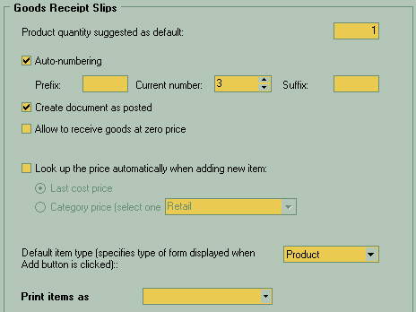

At the top of the window there is a field with default quantity of goods to be entered into goods receipt slips, suggested by the system.
Then you may check "Auto-numbering" in case you wish ID numbers to be automatically assigned to your goods receipt slips.
For better traceability and to help users quickly identify this kind of documents, you may specify a prefix and/or suffix for your goods receipt slips. You may enter them into "prefix" or "suffix" fields. For example, you may enter "GRS" for "goods receipt slips" or "GDS" for "goods dispatch slips". Current ID number of the document is entered in the "Current number" field. Next document will be assigned a sequence number starting from the current number.
Check "create document as posted" if you wish to automatically post the the documents after they are created. In this case you won't need to use a posting option after you create this document.
Check "Allow goods receipt at zero price" in case the users do not have to specify goods prices when creating goods receipt slips.
Choose "Lookup the price" item to better suit your everyday custom. The "Last cost price" will automatically present you with a numbers that was set on previous document. Category prices can be modified either individually for each product or set for the whole product category.
When you click on Add button to actually add some selling positions to the document there is choice what should be assumed as the Default item type. Is it a single product or a list or a service. It depends on what you sell often than others.
Print item as specify what do you want to see in place of name of product or service in reports or printed forms.
For the warehouse staff it may be better to be model number as they often being more specific to describe the needed position in the list, but client may want just a simpler names.
|